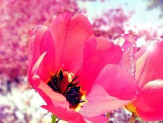
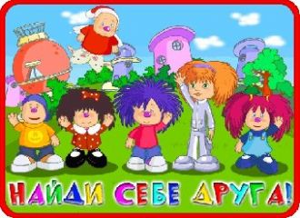

Desert loving in your eyes all the way.If I listen to your lies, Would you say I'm a man without conviction, I'm a man who doesn't know
Bate forte o tamborEu quero e'Tic, tic, tic, tic, taBate forte o tamborEu quero e' tic, tic, tic, tic, taE messa danca
Some people stand in the darknessAfraid to step into the lightSome people need to help somebodyWhen the edge of surrenders in site
Mira lo que se avecinaa la vuelta de la esquina,viene Diego rumbeando.Con la luna en las pupilasy en su traje agua marina
We sign our cards and letters BFFYou've got a million ways to make me laughYou're lookin' out for me; you've got my backIt's so good to have you around
А я поднимаюсь в облака,Планете своей кричу "пока".Сейчас поднимаюсь над Землёй,Чтоб вновь прилететь домой.Уже под ногами - космодром,
По земле вы идёте твёрдо, Не страшат на пути преграды – В небо птицей взлетите гордой,Если родина скажет «Надо!»Вы всегда на переднем фронте,
Serenata quasi a mezzanotteguardie e ladri che si fanno a bottee i ragazzi da solisono ancora romantici.Serenata per i separati
Du pont des supplicesTombent les actricesEt dans leurs yeux chromésLe destin s’est brouillé
オオオオオー
ダメだったうまくいかないそんなことばかりよね
それでもね進すすんでいくのちゃんと前まえを向むいて
間違まちがえることでやっと分わかることだってあるから
На золотом крыльце сиделиМишки Гамми, Том и Джерри,Скрудж МакДак и три утёнка,Выходи, ты будешь Понка!

Мыслям о тебе взмахну рукой.Я не думала сказать "постой".Ты колючий, но такой простой,Как пузырьки лимонада!Вспоминаю я твои слова,

я, и я, и я, и я поздравляю тебя!И я, и я, и я, и я поздравляю тебя!
My girl is the kinda person everyone likesShe can fix up or just hang with the guysCould be the pretty girl that you see at the mall
Все начиналось сказочно тогда. Ты мне шептала сладкие слова. Пока во сне тебя я рисовал. Ты порхала в ночь, ну а я не знал.
Мне открыть тебе тайну?Не лей слезы зря!Любить чужого парня?Ты сама не своя.Не будь так наивна,Не любит он тебя.
Sing Hallelujah!A B C is like 1 2 3The beatThe rhythmThe bass Y'allCome onHappy people come onJam with meOh Lord
Χορωδία:Θέλω πολύ να ξαναζήσω καλοκαιρινές στιγμέςΟ ήλιος μου θέλω να γίνεις, λάδι στο κορμί να καιςΚαι σε χαμένες παραλίες, ζήτησε μου όσα θες
Пусть будут яркими дороги,Которые нам предстоит пройти.Пусть не встречаются тревогиНа нашем жизненном пути.
Entends tu cette musique au fond de toi?Ferme les yeux c'est magique, elle te voit. Et ton coeur mécanique se déploie.